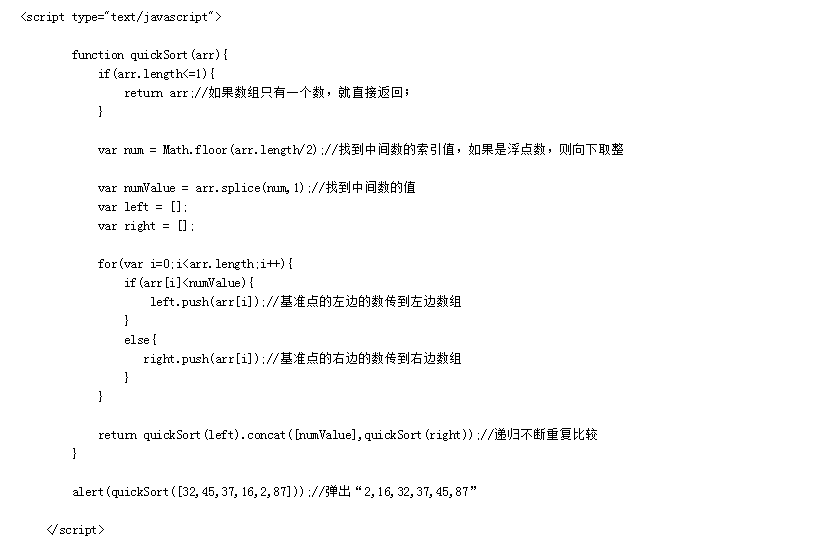
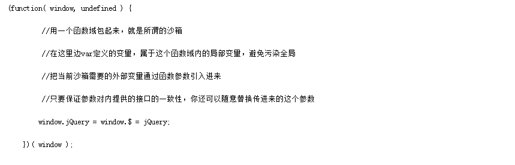

当发送一个服务器请求时，浏览器首先会进行缓存过期判断。浏览器根据缓存过期时间判断缓存文件是否过期。
情景一：若没有过期，则不向服务器发送请求，直接使用缓存中的结果，此时我们在浏览器控制台中可以看到 200 OK (from cache)， 此时的情况就是完全使用缓存，浏览器和服务器没有任何交互的。
情景二：若已过期，则向服务器发送请求，此时请求中会带上①中设置的文件修改时间，和 Etag 然后，进行资源更新判断。服务器根据浏览器传过来的文件修改时间，判断自浏览器上一次请求之后，文件是不是没有被修改过；根据 Etag ，判断文件内容自上一次请求之后，有没有发生变化
情形一：若两种判断的结论都是文件没有被修改过，则服务器就不给浏览器发 index.html 的内容了，直接告诉它，文件没有被修改过， 你用你那边的缓存吧—— 304 Not Modified ，此时浏览器就会从本地缓存中获取 index.html 的内容。此时的情况叫协议缓存，浏览器 和服务器之间有一次请求交互。
情形二：若修改时间和文件内容判断有任意一个没有通过，则服务器会受理此次请求，之后的操作同①, ① 只有get请求会被缓存，post请求不会
Expires 要求客户端和服务端的时钟严格同步。 HTTP1.1 引入 Cache-Control来克服Expires头的限制。 如果max-age和Expires同时出现，则max-age有更高的优先级。
Cache-Control: no-cache, private, max-age=0
ETag: abcde
Expires: Thu, 15 Apr 2014 20:00:00 GMT
Pragma: private
Last-Modified: $now // RFC1123 format
Etag 由服务器端生成，客户端通过 If-Match 或者说 If-None-Match 这个条件判断请求来验证资源是否修改。 常见的是使用 If-None-Match 。请求一个文件的流程可能如下：
====第一次请求===
1.客户端发起 HTTP GET 请求一个文件；
2.服务器处理请求，返回文件内容和一堆Header，当然包括Etag(例如"2e681a-6-5d044840")(假设服务器支持 Etag生成和已经开启了Etag).状态码200
====第二次请求===
客户端发起 HTTP GET 请求一个文件，注意这个时候客户端同时发送一个If-None-Match头，这个头的内容就是 第一次请求时服务器返回的Etag：2e681a-6-5d0448402.服务器判断发送过来的Etag和计算出来的Etag匹配， 因此If-None-Match为False，不返回200，返回304，客户端继续使用本地缓存；流程很简单，问题是，如果服 务器又设置了Cache-Control:max-age和Expires呢，怎么办
答案是同时使用，也就是说在完全匹配 If-Modified-Since 和 If-None-Match即检查完修改时间和 Etag 之后， 服务器才能返回304.(不要陷入到底使用谁的问题怪圈)
为什么使用Etag请求头?
Etag 主要为了解决 Last-Modified 无法解决的一些问题。
栈的插入和删除操作都是在一端进行的，而队列的操作却是在两端进行的。
队列先进先出，栈先进后出。
栈只允许在表尾一端进行插入和删除，而队列只允许在表尾一端进行插入，在表头一端进行删除
栈区（stack）— 由编译器自动分配释放 ，存放函数的参数值，局部变量的值等。
堆区（heap） — 一般由程序员分配释放， 若程序员不释放，程序结束时可能由OS回收。
堆（数据结构）：堆可以被看成是一棵树，如：堆排序；
栈（数据结构）：一种先进后出的数据结构。
"快速排序"的思想很简单，整个排序过程只需要三步：
（1）在数据集之中，找一个基准点
（2）建立两个数组，分别存储左边和右边的数组
（3）利用递归进行下次比较

(答案仅供参考)
jQuery 源码封装在一个匿名函数的自执行环境中，有助于防止变量的全局污染，然后通过传入window对象参数， 可以使window对象作为局部变量使用，好处是当jquery 中访问window对象的时候，就不用将作用域链退回到顶 层作用域了，从而可以更快的访问 window 对象。同样，传入 undefined 参数，可以缩短查找undefined时的 作用域链。

jquery将一些原型属性和方法封装在了 jquery.prototype 中，为了缩短名称，又赋值给了 jquery.fn ，这是很形象的写法。
有一些数组或对象的方法经常能使用到，jQuery将其保存为局部变量以提高访问速度。
jquery 实现的链式调用可以节约代码，所返回的都是同一个对象，可以提高代码效率。
新增模板字符串（为JavaScript提供了简单的字符串插值功能）、箭头函数（操作符左边为输入的参数，而右边则是 进行的操作以及返回的值 Inputs=>outputs 。）、for-of （用来遍历数据—例如数组中的值。） arguments 对象可被 不定参数和默认参数完美代替。 ES6 将 promise 对象纳入规范，提供了原生的 Promise 对象。增加了 let 和 const 命令，用来声明变量。增加了块级作用域。let命令实际上就增加了块级作用域。ES6规定， var 命令和 function 命令声明的全局变量，属于全局对象的属性； let 命令、 const 命令、 class 命令声明的全局变量，不属于全局 对象的属性。。还有就是引入 module 模块的概念
HTTP/2 引入了“服务端推（server push）”的概念，它允许服务端在客户端需要数据之前就主动地将数据发送 到客户端缓存中，从而提高性能。
HTTP/2 提供更多的加密支持
HTTP/2 使用多路技术，允许多个消息在一个连接上同时交差。
它增加了头压缩（header compression），因此即使非常小的请求，其请求和响应的 header 都只会占用很小比例的带宽。
defer并行加载js文件，会按照页面上script标签的顺序执行 async并行加载js文件，下载完成立即执行，不会按照页面上 script标签的顺序执行
backbone 具有依赖性，依赖 underscore.js 。 Backbone + Underscore + jQuery(or Zepto) 就比一个 AngularJS 多出了2 次HTTP请求.
Backbone 的 Model 没有与UI视图数据绑定，而是需要在View中自行操作DOM来更新或读取UI数据。 AngularJS 与此相反， Model直接与UI视图绑定， Model 与UI视图的关系，通过 directive 封装， AngularJS 内置的通用 directive ，就能实现 大部分操作了，也就是说，基本不必关心 Model 与UI视图的关系，直接操作Model就行了，UI视图自动更新。
AngularJS 的 directive ，你输入特定数据，他就能输出相应UI视图。是一个比较完善的前端MVW框架，包含模板， 数据双向绑定，路由，模块化，服务，依赖注入等所有功能，模板功能强大丰富，并且是声明式的，自带了丰富的 Angular 指令。
工厂模式：
主要好处就是可以消除对象间的耦合，通过使用工程方法而不是new关键字。将所有实例化的代码集中在一个位置防止代码重复。
工厂模式解决了重复实例化的问题 ，但还有一个问题,那就是识别问题，因为根本无法 搞清楚他们到底是哪个对象的实例。
function createObject(name,age,profession){//集中实例化的函数var obj = new Object();
obj.name = name;
obj.age = age;
obj.profession = profession;
obj.move = function () {
return this.name + ' at ' + this.age + ' engaged in ' + this.profession;
};
return obj;
}
var test1 = createObject('trigkit4',22,'programmer');//第一个实例var test2 = createObject('mike',25,'engineer');//第二个实例
构造函数模式
使用构造函数的方法 ，即解决了重复实例化的问题 ，又解决了对象识别的问题，该模式与工厂模式的不同之处在于：
1.构造函数方法没有显示的创建对象 (new Object());
2.直接将属性和方法赋值给 this 对象;
3.没有 renturn 语句。
使用闭包主要是为了设计私有的方法和变量。闭包的优点是可以避免全局变量的污染，缺点是闭包会常驻内存， 会增大内存使用量，使用不当很容易造成内存泄露。在js中，函数即闭包，只有函数才会产生作用域的概念
闭包有三个特性：
1.函数嵌套函数
2.函数内部可以引用外部的参数和变量
3.参数和变量不会被垃圾回收机制回收
cookie 虽然在持久保存客户端数据提供了方便，分担了服务器存储的负担，但还是有很多局限性的。
第一：每个特定的域名下最多生成20个 cookie
1.IE6或更低版本最多20个cookie
2.IE7和之后的版本最后可以有50个cookie。
3.Firefox最多50个cookie
4.chrome和Safari没有做硬性限制
IE 和 Opera 会清理近期最少使用的 cookie ， Firefox 会随机清理 cookie。
cookie 的最大大约为 4096 字节，为了兼容性，一般不能超过 4095 字节。
IE 提供了一种存储可以持久化用户数据，叫做 userdata ，从 IE5.0 就开始支持。每个数据最多128K，每个 域名下最多1M。这个持久化数据放在缓存中，如果缓存没有清理，那么会一直存在。
在较高版本的浏览器中， js 提供了 sessionStorage 和 globalStorage 。在HTML5 中提供了 localStorage 来取代 globalStorage 。
html5 中的 Web Storage 包括了两种存储方式： sessionStorage 和 localStorage 。
sessionStorage 用于本地存储一个会话（session）中的数据，这些数据只有在同一个会话中的页面才能访问并且当会话结束后数据 也随之销毁。因此 sessionStorage 不是一种持久化的本地存储，仅仅是会话级别的存储。
而 localStorage 用于持久化的本地存储，除非主动删除数据，否则数据是永远不会过期的。
Web Storage 的概念和 cookie 相似，区别是它是为了更大容量存储设计的。 Cookie 的大小是受限的，并且 每次你请求一个新的页面的时候 Cookie 都会被发送过去，这样无形中浪费了带宽，另外 cookie 还需要指定作用域， 不可以跨域调用。
除此之外， Web Storage 拥有 setItem,getItem,removeItem,clear 等方法，不像 cookie 需要前端开发者自己封装 setCookie，getCookie 。
但是 cookie 也是不可以或缺的： cookie 的作用是与服务器进行交互，作为 HTTP 规范的一部分而存在 ，而 Web Storage 仅仅是为了在本地“存储”数据而生
浏览器的支持除了 IE７ 及以下不支持外，其他标准浏览器都完全支持(ie及FF需在web服务器里运行)，值得一提的 是IE总是办好事，例如IE7、IE6中的 userData 其实就是 javascript 本地存储的解决方案。通过简单的代码封装可以统一 到所有的浏览器都支持 web storage 。
localStorage 和 sessionStorage 都具有相同的操作方法，例如 setItem、getItem 和 removeItem 等
1、cookie数据存放在客户的浏览器上，session数据放在服务器上。
2、cookie不是很安全，别人可以分析存放在本地的COOKIE并进行COOKIE欺骗 考虑到安全应当使用session。
3、session会在一定时间内保存在服务器上。当访问增多，会比较占用你服务器的性能 考虑到减轻服务器性能方面，应当使用COOKIE。
4、单个cookie保存的数据不能超过4K，很多浏览器都限制一个站点最多保存20个cookie。
5、所以个人建议： 将登陆信息等重要信息存放为SESSION其他信息如果需要保留，可以放在COOKIE中